찐모공 개선 가이드 (추가 수정본)
(25년 10월 27일 수정)
실제 제 이야기입니다.
제발 제 글 그대로
복사해서 쓰지 마세요.
다보고 있습니다.
-
특히 에XX퍼레이션 업체.
제 글 똑같이 쓴 뒤에
자기네 제품 홍보하지 마세요
제보 많이 들어옵니다
한번 더 발각되면
바로 조치 취하겠습니다
이 글은 심리상담사인 내가
그깟 '넓은 모공'하나 때문에
우울증에 시달려..
되레 상담까지 받았던
그 날의 실제 이야기다
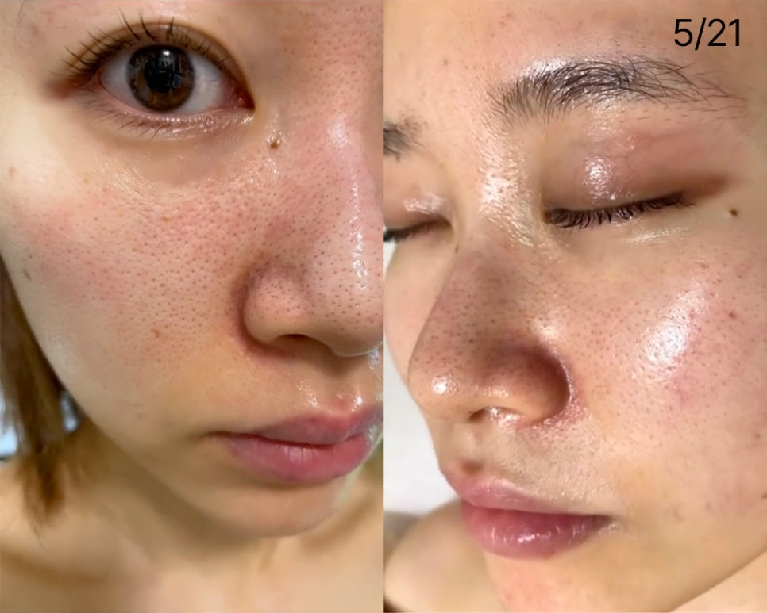
현재는 수많은 테스트로
모공 축소법을 완벽히 알게 되어
이렇게 개선된 상태다.

글이 많이 길다
최하단에 요약본을 기재했으니
시간이 없으신 분들은
요약본만이라도 보길 바란다.
<제발 광고 사절..>
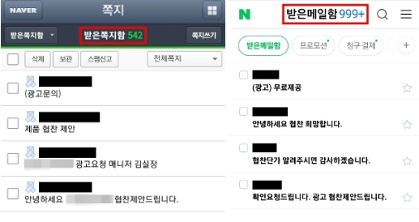제가 쓴 내용을 보시고
자기네 화장품 홍보해달라고
광고 요청하시는 분들이 계시는데
공익을 위한 글이지
화장품 업체들을 위한 글이 아닙니다
이 글 작성한 이후로
한번만 더 광고 문의 들어오면
모자이크 없이 전체 내용을 공개하겠습니다.
그러니 제발 그만 연락하세요
피부가 완전히 망가지는데까지는
얼마 걸리지 않았다.
한 달도 안 걸렸던 것 같다.
피부는 울긋불긋해졌고,
모공은 거울을 볼때마다 넓어졌다.
사람들의 마음을 치료해주어야하는데,
내 정신과 마음이 썩어들어가고 있었기에..
고객의 마음을 치료할
조금의 여유조차 없었다..
어쩌다 이 지경까지..
지금은 편안히 앉아서 글을 쓰고 있지만
내 피부 해결 과정은 그리 순탄치만은 않았다
30대 초에 좋지 않은 이유로
남편과 이혼하여
나혼자 아이 둘을 키웠고,
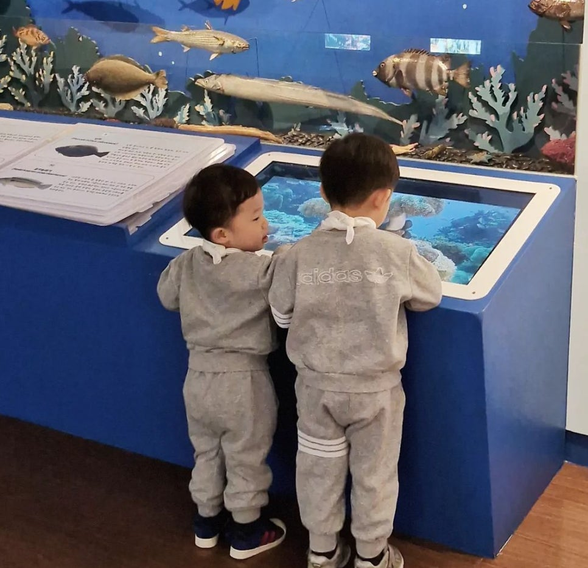
그러면서 심리상담사 일까지 하다보니
불규칙한 식사는 물론,
나를 챙기는 시간이 전혀 없었다.
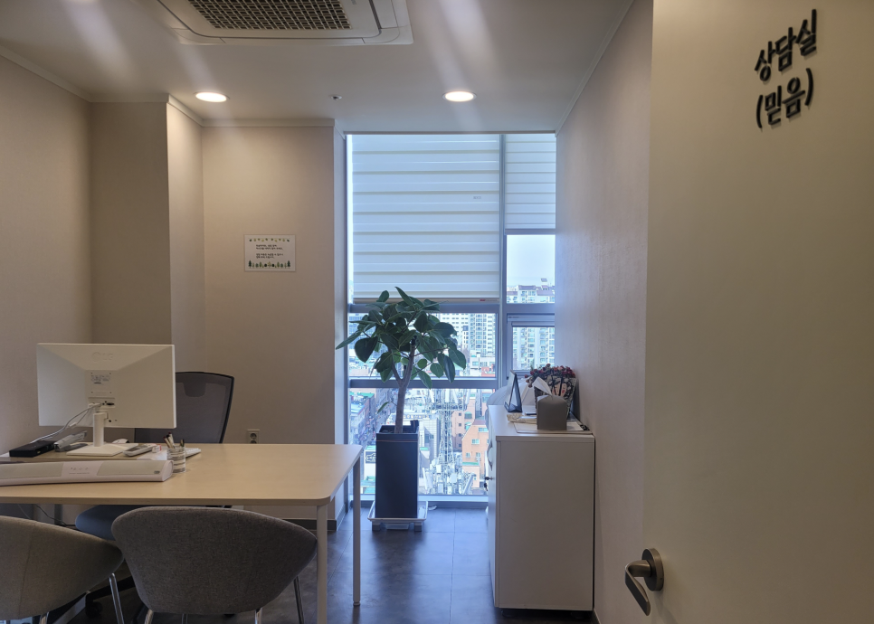
피부 같은 건 당연히
관리할 틈 조차 없었다.
그렇게 조금씩 피로가 누적되며
굉장히 예민해지기 시작했다.
그러던 어느 날,
상담을 받으러 온 고객님께서
내 피부를 힐끔힐끔 쳐다보는 것이다.
아이 키우랴, 일 하랴 했던 터라
거울 볼 시간도 없었기에
그 날은 집에 가자마자
거울로 내 자신을 바라봤다
얼굴엔 피로감이 가득했고,
예전과는 다른 피부에 너무나 충격을 먹었다.
대체 어디서부터 잘못되었나 싶었다..
그날 이후로 나는 강박에 걸리듯
상담실 책상에 놓인 거울을
시도때도 없이 바라보게 되었다.
고객이 내 얼굴을 쳐다보면
괜히 물 마시는 척 얼굴을 가렸다
그런 상황이 반복되며
결국 나는 우울증 상담과 약까지 먹게 됐다.
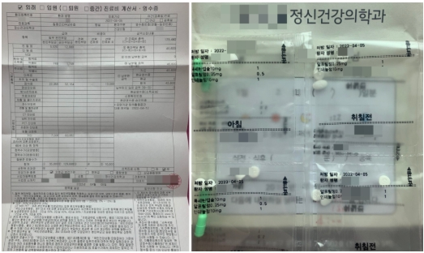
심리상담사였던 내가
'무너지는 순간'이었다.
처참한 심정에
한동안 집에만 처박혀 있었다.
아이들에게도 너무도 미안했다.
한편으론,
무능력한 엄마로 보일까 두려웠다.
나는 이대로는 안되겠다 싶어
당장에 할 수 있는 것은 다 해보기 시작했다.
이런 저런 시술들은 물론,
모공에 좋다는 여러 화장품들도
전부 사용해봤지만
결국 효과는 단 하나도 없었다

모공의 원인이라던
피지 제거술도 받아봤지만
피지 제거 후 비어있는 공간 때문인지
오히려 모공이 더 넓어지는 부작용마저 생겼다.
그렇게 6개월 간
모공에 들어간 돈만 수백만원에 달했다..
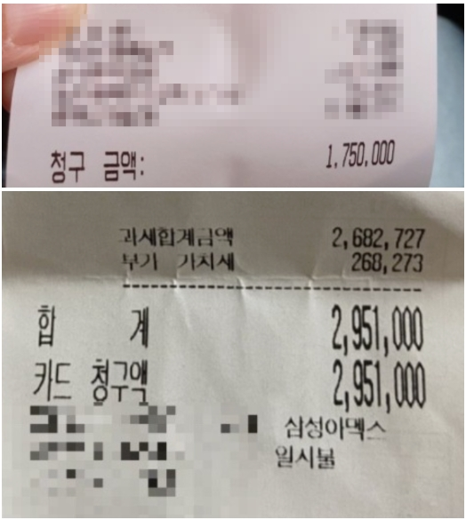
잠깐동안은 좋았지만
1개월도 못가
결국 원래대로 돌아왔다.
이 때,
큰 깨달음을 얻었다.
이 모든 것은 일시적 수단일 뿐이고,
원인을 해결하지 않으면
언제든 피부가 안좋아질 수 있다는 사실을
뼈저리게 느끼게 되었다.
또한 ,
온갖 과대광고가 판을 치고
피부과 의사도 아니면서
진짜인 척 하며 거짓말을 하는 광고에
정말 치를 떨었다.
남의 고통을 이용해서
돈을 버는 업체들에게
여러번 당하고 나니
내가 제대로 공부하지 않으면
나뿐만 아니라 나처럼 간절한 사람들도
당하겠구나라는 생각에
내가 직접 공부하고,
숨겨져있는 진짜 정보들을 찾아보며
모공을 개선할 수 있는 방법에 대해
7개월간 파헤쳤다.
국내에선 업체들의 광고가 너무 많아
해외의 심각한 모공이 개선된 사례들,
근본적인 원인과 치료 방법 등
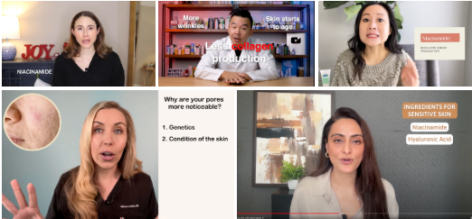
집착적으로 찾아내
내 피부에 직접 연구하였다.
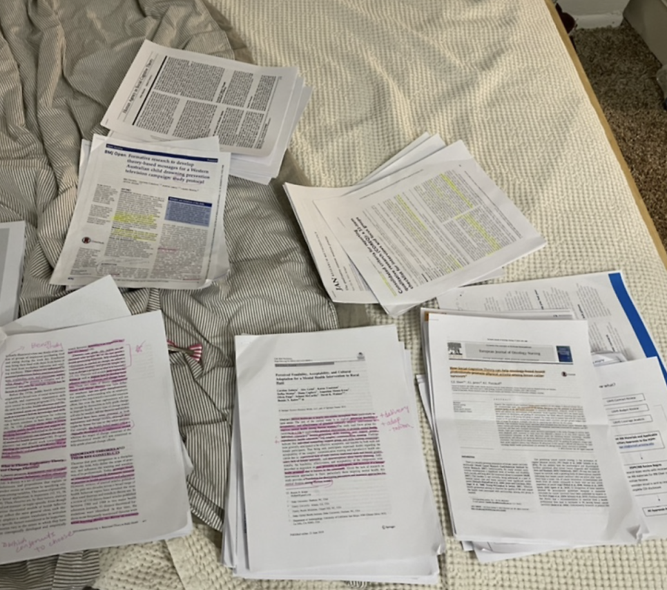
7개월간의 내 모공 극복기는
국내에는 아직 밝혀지지 않은
최고의 모공 개선법이 되었고,
허위광고 제품을 걸러내는 방법과
올바른 성분들 마저 완벽히 알게 되었다.
이 최고의 모공 개선법을
나에게 그대로 적용해본 결과,

내 극심한 컴플렉스 였던
모공과 울긋불긋한 피부는
3개월만에
몰라보게 좋아졌고,

지금은 상담 해드리며
내 나이(43세)와 이야기를 소개할 때마다
그 나이가 맞냐며
'심지어 어떤 관리를 받으시냐'
는 질문까지 받게 됐다.
(이제는 상담사로서
부끄럽지 않고 오히려 더욱 진실되게
상담할 수 있게 되었다.)
내가 알게된 이 방법으로
친구들과 지인들에게도 도움을 주고 있으며,
자료들도 조금씩 모아두어
지속적으로 이 글을 업데이트 하고 있다.
만약 나처럼 갑작스레 피부가 망가져버렸다면,
피부로 인해 극심한 스트레스까지 있다면,
꼭 읽어보고 도움 받으시길 바란다.
7개월간 집착적으로 파고들었던
진짜 모공 개선법에 대한
모든 정보들을 이 글에 담았고,
논문과 연구결과를 기반으로 한
거짓 없는 정보들만 작성했다.
꼭 모공이 개선되길 바라며,
해결법에 대해 본격적으로 작성해보겠다.
목차
01. 화장품 업체들의 비양심적 행위
02. 모공이 넓어지는 원인과 '핵심성분'
03. 24년, 최고의 모공 개선 가이드 (요약)
정말 시간이 없다면
3번 파트만이라도 꼭 보길 바란다.
3분만 투자한다면
나처럼 수백만원을 손해보는 일 없이
모공을 정말로 개선할 수 있다.
화장품 업체들의 비양심적 행위
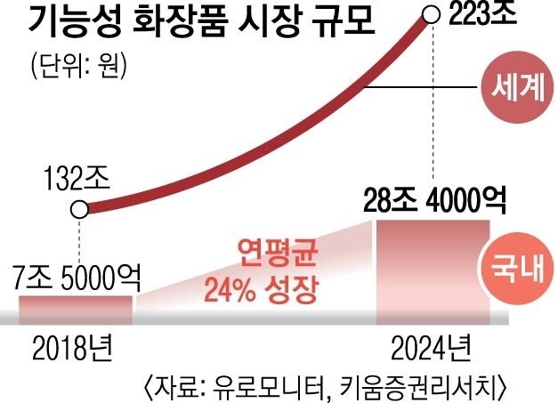
국내뿐 아니라 전세계적으로
화장품 시장은 매년 성장하고 있다.
2024년 기준 약 30조원의 시장규모로
어떤 산업과 비교해도 매우 큰 시장이다.
그렇기 때문에 매년 수천, 수만가지
새로운 피부관련 화장품들이 시장에
계속 쏟아져 나오고 있다.
여기서 중요한 문제는,
효과가 검증되지 않은 제품을
그럴싸하게
허위 과장 광고로
판매하는 업체들 또한 급격하게
늘어나고 있다는 점이다.
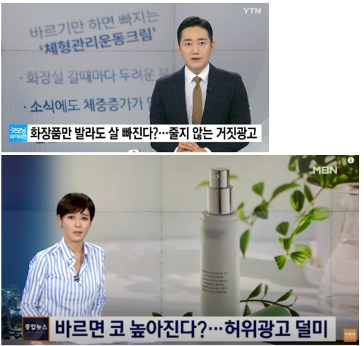
나 또한 간절한 마음에 혹해서
인스타그램, 유튜브 등에서
구매한 제품만 수백만원이 넘는다
하지만
효과를 본건 단 하나도 없었다
그 때의 나는 그저
'제품이 내 피부에 안 맞는구나...'
라고 생각했지만
원리와 방법을 깨달은
지금의 나는 이제 안다.
그럴싸한 광고에 속아서
모공 축소에 도움이 되는
핵심성분이 1도 들어있지 않은
쓰레기같은 제품을 썼기 때문이란것을
모공에 대해 조금이라도
공부해본 사람이라면
'피지억제'와 ‘모공수축’ 성분이
필수인 것을 알고 있을 것이다.
하지만 모공축소에 효과가
있다고 광고하는 판매처들의
제품 성분을 자세히 조사해보면
95% 이상이 ‘모공축소’에
전혀 관계없는 성분을 사용하고
또한
인체적용시험도 안한 검증되지
않은 제품들 뿐이란 걸 알 수있다.
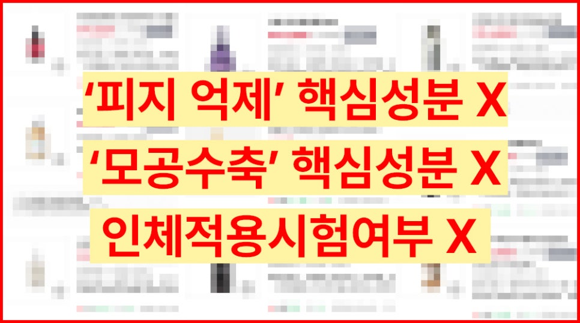
이게 무슨 뜻이냐면,
극단적으로 표현해서
모공에 전혀 도움되지 않는
그냥 일반 화장품을
‘모공축소’에 도움이 된다고
그럴싸하게 광고하며
판매하고 있다는 것이다...
나는 이제 어떤 제품이 진짜 도움이
되는지 성분을 보면 분별이 가능하지만
원리와 핵심성분에 대해
전혀 모르는
일반적인 소비자들은...?
절대 알 수가 없다.
그냥 바보처럼 믿고
구매하게 되는것이다.
(물론 과거의 내모습이다...)
이제는 이렇게 연예인이 홍보한다고
무조건 믿지말고 성분을 믿고 사야한다
“여기부터가 핵심이다”
이제부터 어떤 성분이
'모공축소'에 도움이 되는지
하나씩 자세히 설명하겠다.
“단 3가지만 기억하면 된다”
1) 필수 성분 - 나이아신아마이드
2) 탄력 성분 - 펩타이드
3) 모공 핵심 성분 - 탄닌
성분의 원리와 효능에 대해선
자세히 설명해야 하기에
조금 어려울 수 있다.
(글이 어렵다면 하단 결론요약을 볼 것)
모공이 넓어지는 원인과 '핵심성분'
나이아신아마이드
'모공관리의 기본'
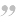
모공 축소에 도움되는 성분을 찾아보면
빠지지 않고 나오는게
나이아신아마이드 성분이다.
왜 나이아신아마이드가
모공 축소에 도움이 될까?
그 전에 모공이 넓어지는
이유에 대해 알아야한다.
모공 속 피지들이 가득 차면서
모공이 버티다못해 넓어지게 되는데
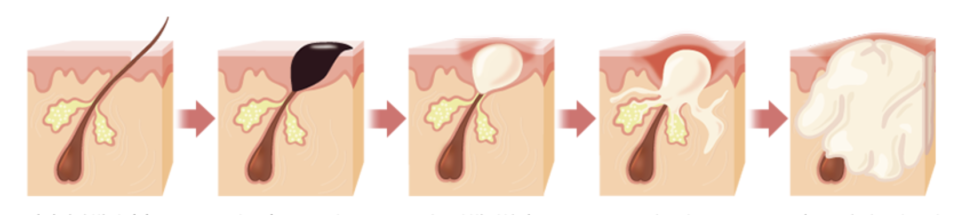
이때, 나이아신아마이드는
모공 내벽 정상화 효과와
피지 분비를 억제하여
모공 개선에 도움을 준다.
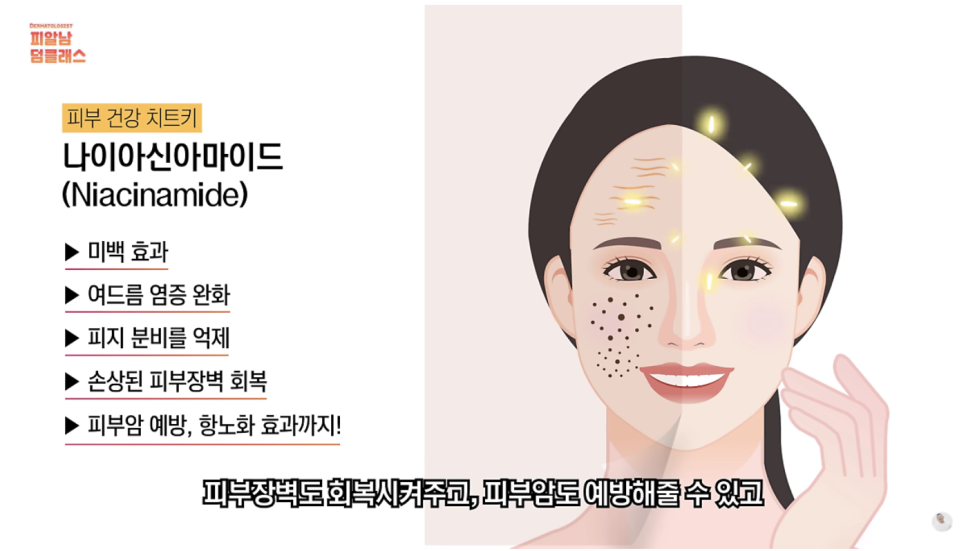
피알남 유튜브
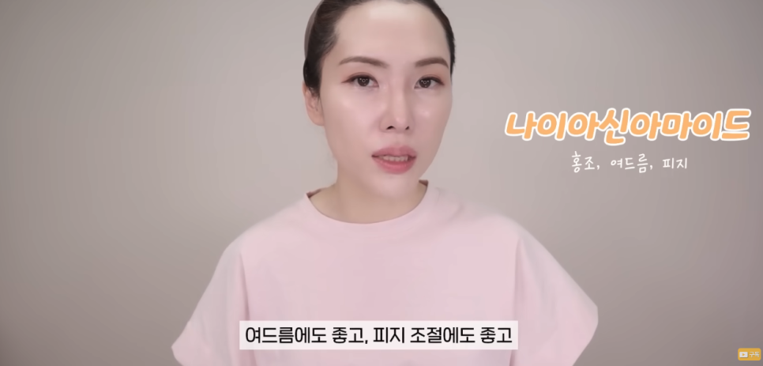
제이나 유튜브
이렇게 나이아신아마이드가
근본적인 문제 해결에
도움이 된다는게 대중적으로 알려지자
수많은 화장품 업체에서는 제품에
나이아신아마이드를 넣은 것을 강조하며
광고하기 시작했다.
여기에 또 속으면 안된다.
나이아신아마이드를
식약처 미백 고시 함량인
딱 2% 만 넣고,
마치 나이아신아마이드가
주요 성분인 것처럼 하여
피지와 모공에 효과가 좋은 것처럼
홍보하는 것이다.
(적은 함량으로는 효과가 쉽게 나타나지 않아
모공케어 절대적으로 불가능함)
이제는 이런 악덕업체들의
과대광고에 놀아나면 안된다.
제대로된 나이아신아마이드
성분 효과를 빠르게 보려면
2~5%의 낮은 함량이 아니라
10% 정도의 고함량이여야 한다.
(그래서 유명 미국 화장품들이
전부 10%대로 나오는거임)
그리고 더욱 중요한 것은
'10% 정도의 고함량은 유지한채'
피부 자극이 없다는 것을 증명하는
저자극 인증 결과가 있어야 한다.
1. 10% 정도의 고함량일 것
2. 저자극 인증 결과 필수
펩타이드
'모공 내부 탄력 강화'
뉴스에서 워낙 많이 나와
대부분 알고 있는
탄력에 좋다던 그 펩타이드.
대체 탄력과 모공이
어떤 상관관계가 있을까?
왜 탄력이 모공을 줄이는데
꼭 필요한 걸까?
모공이 넓어지는 이유는
피지 분비량이 때문이기도 하지만
30대 이후, 피부 탄력이 급감소하며
모공이 축 처지며 넓어지게 된다.
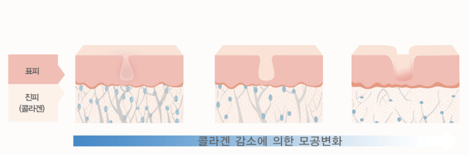
특히나 40대부터는
탄력을 담당하는 콜라겐 수치가
20대에 비해 2배나 감소하기 시작하므로
미리 관리하지 않으면
40대에는 모공이 더 커질 뿐 아니라
축 처져서 마치 주름처럼 보이게 되는 것이다.
(슬로우에이징이 중요한 이유!!)
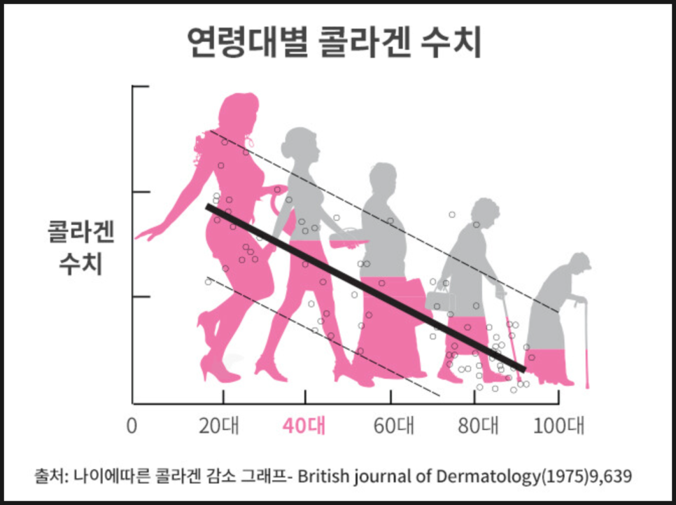
20대의 젊은 모공과
40대의 처진 모공은 다르다.
20대의 모공은 대부분 피지 분비량으로 인해
확장된 모공으로 쳐짐이 없다.
반면,
40대의 모공은 탄력이 떨어진 상태기 때문에
모공이 세로로 늘어나, 마치 주름처럼 변형된다.
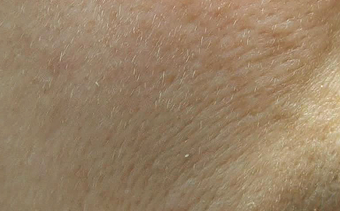
40대 모공
따라서 피지분비량 관리와 더불어
탄력 관리를 꾸준히 해줘야하는데
이때 가장 효과적인 성분이
바로 펩타이드라는 것이다.
내가 사용해본 펩타이드 중
모공 관리와 붉은기 관리에
가장 효과적이었던 성분은 바로
카퍼트라이펩타이드-1이다.
이유는 논문을 찾아보면 알 수 있는데,
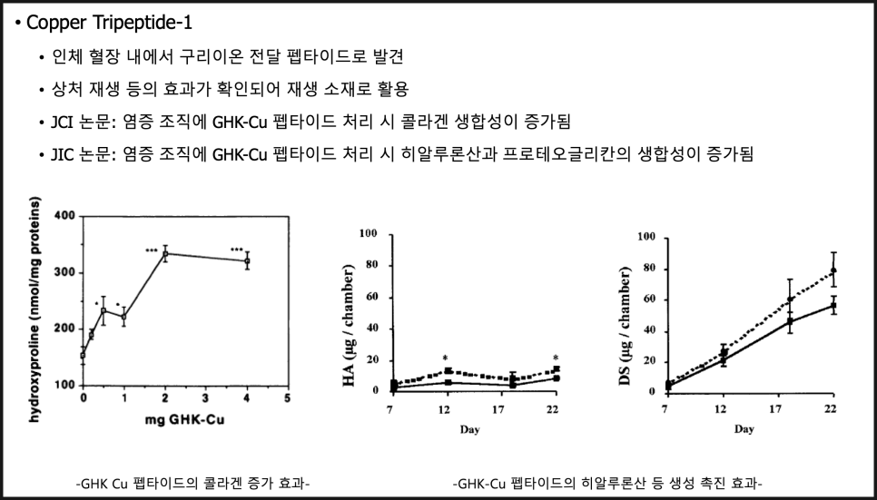
논문
염증 조직에 해당 펩타이드 처리 시
콜라겐 생합성이 증가된다고 한다.
즉,
염증으로 생긴 붉은기가 있는 부위에
카퍼트라이펩타이드를 바르면
탄력은 증가하고,
붉은기는 사라진다는 것이다.
심지어 상처 재생 효과도 있어서
여드름 짠 흔적이 있다면
가장 효과 좋은 성분이라 할 수 있다.
그런데
이런 궁금증이 생길 수 있다.
'콜라겐 수치가 부족한건데
그냥 콜라겐 바르면 안될까요?'
터무늬없게 광고하는 업체들 덕분에
소비자들은 대부분 위 같은 인식을
가지고 있을 것이다.
하지만 콜라겐을 바른다고
콜라겐이 그대로 흡수되는 것이 아니다.
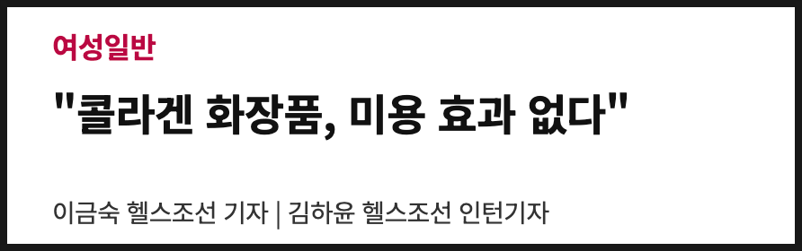
뉴스기사
콜라겐이 진피층에 들어가야만
효과를 발휘할 수 있는데,
사실상 절대 있을 수 없는 일이다.
콜라겐의 분자크기는
3,000~5,000달톤.
진피 층에 들어가기 위해선
500달톤 이하여야 한다.
그렇기 때문에
그냥 콜라겐을 바르는 것만으로는
절대 주름 및 탄력이 개선되지 않는다.
분자량이 압도적으로 작은
트라이펩타이드를 사용해줘야
충분히 흡수되는 것이다.
굳이 콜라겐 성분이 들어간 화장품을
구입할 필요가 없다는 것이다.
모공 수축 핵심 성분
Tannin Complex
많은 사람들이 모공 수축에
실패하게 되는 가장 큰 이유는
나이아신아마이드 성분으로
'피지 억제만' 하는 것이다.
피지 억제와 모공 수축을 병행해줘야
실패 없이 모공을 축소시킬 수 있다.
피지를 억제하더라도
이미 커져있는 모공을 가만히 두면
절대 모공은 줄어들지 않는다.
모공 수축에 관심이 있다면
탄닌 성분을
한번쯤은 들어봤을 것이다.
탄닌 성분은
떫은 맛을 내는 원리를 피부에 적용해
모공이 급속도로 축소되게 만든
국가 인증 특허 성분이다.
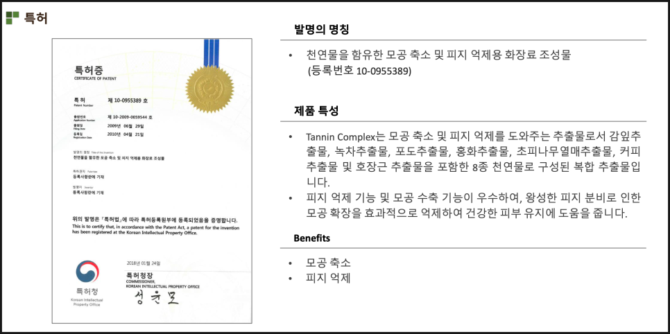
처음엔 이게 믿어도 될만한 성분인지
알 수가 없어서 논문을 정말 많이 찾아봤는데
이미 수많은 논문으로 증명된 상태이다.
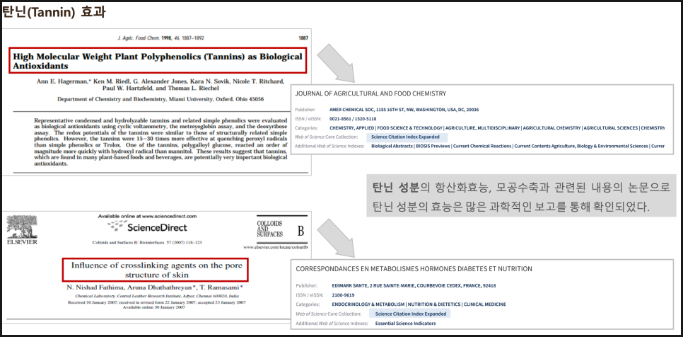
<탄닌의 모공 수축 원리>
논문을 살펴보니 탄닌 성분이
모공을 수축시키는 원리는 다음과 같다.
차를 오래 우려 마시면 혓바닥이 살짝 떫은데,
그 이유가 차의 탄닌 성분이
혓바닥의 단백질과 수분을 수축시켜
쪼그라 들게 만들어 떫은 맛을 느끼는 것이다.
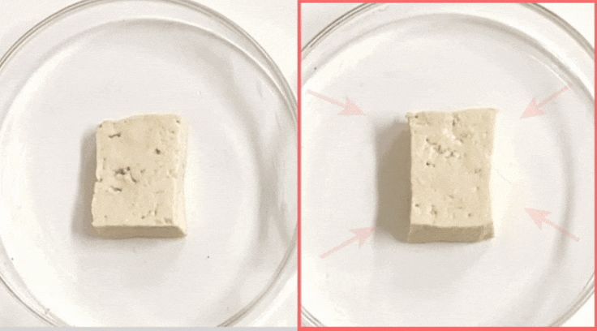
해외 유튜브 - 탄닌 수렴 효과 두부 실험
(해외 실험 영상 - 탄닌 원액 도포 시 두부가 어떻게 변하는지)
이 탄닌을 수분과 단백질로 이루어진
피부에 적용시켜
모공이 급속도로 수축된다.
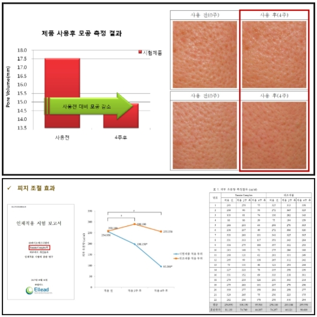
탄닌 성분은 실제로 인체실험을 통해
피지억제 효능과 모공을 수축시키는 기능이
확인되어 국가 인증 특허를 받았다.
성분이 진짜 효과가 있는지 궁금할 때는
꼭 실제 실험을 통해
유의미한 결과값이 데이터로 입증되었는지
필수적으로 확인해야 한다.
탄닌의
모공 수축 및 피지 억제 특허는
데이터상으로 입증되었기 때문에
여러 과대광고를 통한
모공 수축 제품들과 다르게
진짜 '모공수축이 가능한 성분'
이라고 볼 수 있다.
팁. 필수 확인 사항
*화장품 잘못바르면 피부 뒤집어지는 사람은 자세히 읽으세요.
핵심성분만 포함되면
끝일까?
아니다.
저자극 시험 여부
Tannin Complex
모공이 넓은 사람들은
대체적으로 피부가 약할 수 밖에 없다.
피부 상태가 정상이 아니니
피지분비가 지속적으로 일어나고
이로 인해 모공이 계속 넓어지는 것이다.
그런데 자극도가 강한 제품을 사용한다면?
피부가 망가져
모공이 오히려 더 넓어지게 되는
치명적인 일이 벌어질 수 있다.
그래서,
저자극 시험을 완료했는지
필수로 확인해야하는 것이다.
안전한 제품은 저자극 테스트에서
국제접촉피부염연구회의
판정기준(ICDRG)에 따라
자극 정도를 관찰하여
자극이 관찰되지 않으면
평균 피부반응도 0.00
무자극으로 판정된다.
효과가 좋은것도 중요하지만
부작용 없이 안심하고 꾸준히
사용할 수 있는게 더 중요하다.
특히 피부가 민감하거나 예민하다면
피부 일차 자극 평가에서
무자극으로 판정되어 저자극
제품군으로 분류된 제품을 사용해야
안심하고 사용할 수 있다.
모공 개선 가이드 (요약)
지금까지의 모든 내용을
딱 5줄로 요약하겠다.
1. 피부 관리 제품 중 95%는
효과 없는 과대광고 제품이다.
2. 나이아신아마이드의
최적 함량은 10%이다.
3. 모공 전용 탄력 펩타이드
Copper Tripeptide-1
4. 모공 수축의 핵심은
국가 특허 받은 탄닌 성분.
5. 모공 넓은 사람은 꼭
저자극 시험이 완료된 제품을 사용할 것.
장담컨대,
이 방법을 그대로 따라하기만 해도
정상적인 모공으로
돌아갈 수 있다고 장담한다.
나는 위의 기준을 바탕으로
각 성분의 함량, 임상개선율 등을 고려해서
가장 적합한 제품을 선택해 사용하고 있다.
내가 실제로 정리한 표다.
| 사용한 모든 제품 정리

10개 이상 제품을 사용해보며
하나하나 직접 비교 분석해본 결과
"A사 제품만"
나이아신아마이드 10% 최적 배합,
펩타이드 및 탄닌성분이
모두 포함되어 있었고,
저자극 테스트도 완료된 제품이었다.
상위 3개의 제품 또한 나쁘지 않았으나
S사의 경우 저자극 임상이 없고,
자극도가 심한 것이 단점이었다.
N사는 Anti Sebum P 라는
Tannin complex와 비슷한
모공 수축 관련 특허 성분이 있는 것이 특징인데
아쉽게도 나이아신아마이드 함량이 2%라
효과가 미미했다.
그 이하 제품들은
사실 사용해도 별다른 효과는
전혀 느낄 수 없었기 때문에
사용을 권장하지 않는다.
나는 직접 테스트해본 제품 중
A사 제품이 가장 효과가 좋아서
현재까지도 꾸준히 사용하고 있다.
꾸준히 아침 저녁으로
사용해주었더니 효과가 나타났다.

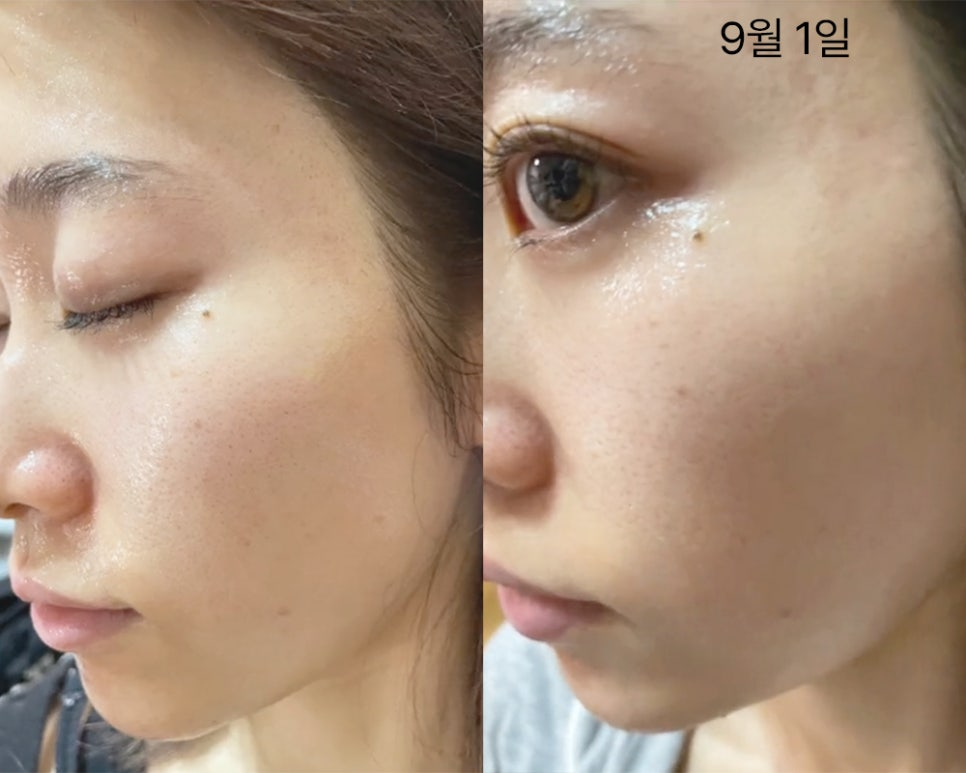
글을 마치며..
남들이 보기엔
모공 넓어진 거,
별거 아닌 것처럼 보이지만
나처럼 갑자기 모공이 넓어져
피부가 급격히 안좋아진 경험을
한번이라도 해봤다면
평범한 일상을 얼마나 힘들게 만드는지,
얼마나 큰 고통인지,
분명히 느낄 수 있을 것이다.
나는 이 모든 것을 겪었고,
점점 우울감에 휩쌓여
모든 사람이 내 얼굴을 바라보고 있는 듯한
두려운 기분을 너무나도 절실히 체감했다.
그래서 이 글을 쓰게 되었다.
그 고통을 누구보다 잘 알기에
극복한 경험과 지식과 노하우를
한명이라도 보고
나처럼 개선될 수 있도록
이 곳에 공유해본다.
한순간에 망가진 피부로 인해
고통받는 사람들이 없어지길
바라는 마음으로 이 글을 끝마친다.
<긴급 추가>
+ 추가로 다시 글을 쓰게 됐네요

제 글이 네이버 메인에 걸리게되어
너무 많은 연락을 받고 있습니다.
단순 제품 추천글처럼 보일까
제품명을 언급하지 않았더니
제 본업에 지장이 갈 정도로
메일과 쪽지로 수없이 많은 연락이 옵니다.
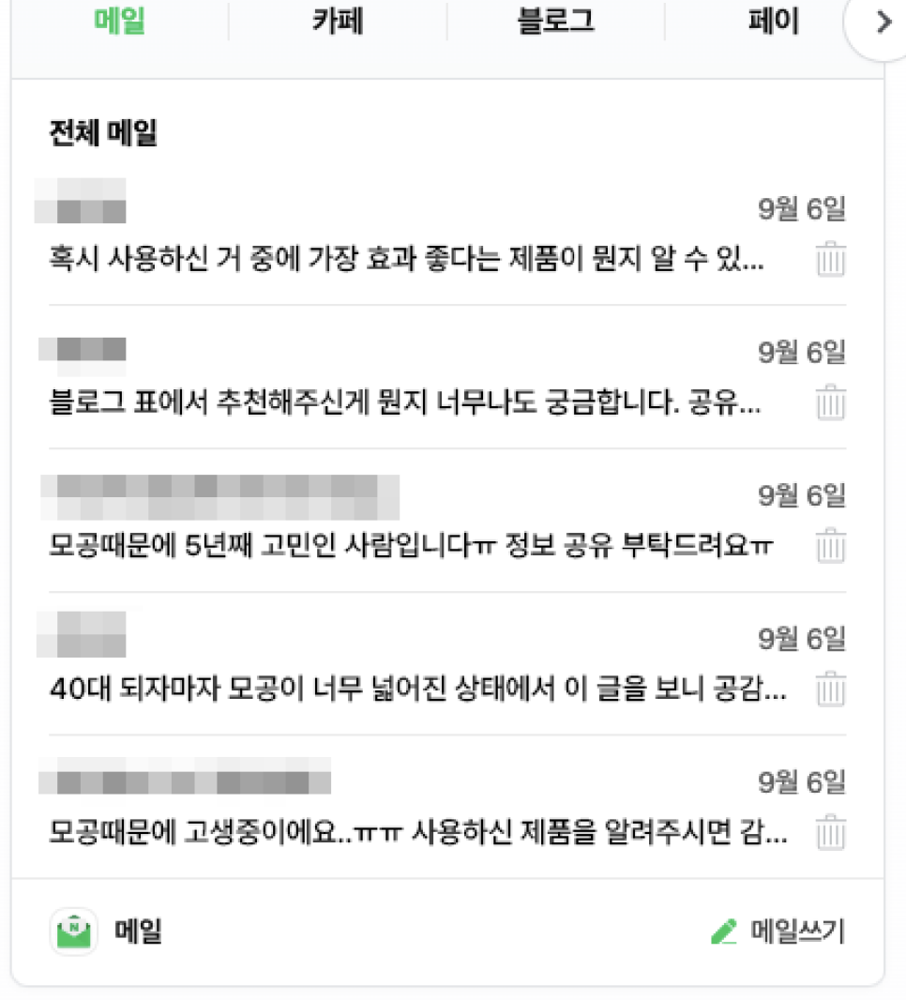
성분 관련 논문들에 대해선
모공에 대해 공부하시는데 도움이 되니
회신을 드리고 있는데
제품에 대해 대놓고 물어보시는 분들에게는
제품과 아무 관련도 없는 사람일 뿐더러
한분 한분 이 제품이 좋다
안내드리기가 어려워
어쩔 수 없이 아래에
일주일만 링크를 남겨놓겠습니다.
앞으로 제품 문의는 그만해주세요.
1위 A사 제품
댓글로 요청을 너무 많이 주셔서
주말까지만 공개해놓겠습니다.
https://skinlogic-lab.com
(약국용 제품인데 최근 인터넷으로 판매되면서 갑자기 판매량이 폭주됐다고 하니 참고하셔서 기간 맞춰 잘 구매하시는게 좋을 듯 합니다.)
2위 S사 제품
*절대 사지마세요. 제가 잘못 추천드렸습니다. 성분 함량 미량 적발된 제품입니다. 걸려서 스토어가 사라졌네요.
https://smartstore.naver.com/drfircare.com
참고했던 논문 정보
International Journal of Dermatology, February 2021, pages 166-173
Biomolecules & Therapeutics, July 2019, pages 562-569
Experimental Dermatology, February 2019, pages 15-22
Dermatologic Therapy, September 2017, ePublication
Journal of Investigative Dermatology, May 2017, page S116
International Journal of Pharmaceutics, March 2017, pages 158-162
Facial Plastic Surgery Clinics of North America, May 2016, pages 145-152
Clinical, Cosmetic, and Investigational Dermatology, July 2015, pages 405-412


 351
351 0
0https://skinlogic-lab.com/
광고글이 아니라서 글이 내려갈수도 있으니 참고 부탁드립니다!
289 0 243 2 120 9 92 1 78 5

 35
35